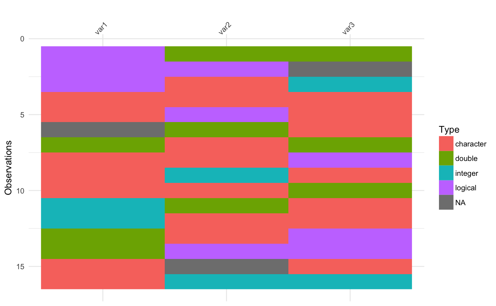

vis_guess just like vis_dat, vis_guess gives you an at-a-glance ggplot object of what is inside a dataframe. Except this time, vis_guess uses `readr` to help it guess what the individual cells are. These cells are coloured according to what class they are and whether the values are missing. As vis_guess returns a ggplot object, it is very easy to customize. Currently very slow.
vis_guess(x)
library(tidyr) library(readr) # to load the `readr:::collectorGuess` function library(dplyr) library(visdat) messy_vector <- c(TRUE, "TRUE", "T", "01/01/01", "01/01/2001", NA, NaN, "NA", "Na", "na", "10", 10, "10.1", 10.1, "abc", "$%TG") set.seed(1114) messy_df <- data.frame(var1 = messy_vector, var2 = sample(messy_vector), var3 = sample(messy_vector)) vis_guess(messy_df)#> #>